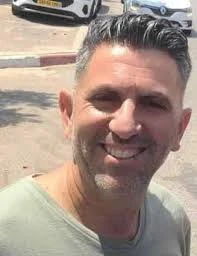

גבים
דוידוביץ' שלומי ז"ל
איש משפחה, רוכב אופניים וחבר אהוב בקהילתו
סיפור חיים
שלומי דוידוביץ׳ ז״ל, בנם של בנימינה וגד, נולד בי״ד בכסלו תשל״ג, 20 בנובמבר 1972. הוא התגורר בקיבוץ גבים והקים משפחה אהובה עם רעייתו עפרה וארבעת ילדיהם.
שלומי נזכר כאיש משפחה מסור, אוהב הארץ, אדם שמח, חיובי וחייכן, שידע להביט בכל אדם בגובה העיניים. חבריו ובני משפחתו תיארו אותו כאדם מיוחד, רגוע, שלֵו, מלא ביטחון פנימי, טוב לב ומאור פנים.
הוא אהב לטייל בטבע, לרכוב על אופניים, לצאת לשטח ולחוות את הארץ דרך הרגליים, השבילים והמרחבים. שלומי היה איש שיחה, בעל ידע רחב וסקרנות, אדם שתמיד היה מוכן לכל פרויקט - בבית, בעבודה ובכל מקום שבו נדרשה עזרה.
מכריו מתקופות שונות בחייו סיפרו על איש נעים הליכות, מקצוען, ג׳נטלמן ואהוב, אדם שידע לשמור על חיוך גם ברגעים מורכבים. רבים זכרו אותו כאדם שמקרין רוגע, חוכמת חיים ואהבת חיים.
חבר ילדות סיפר כי שלומי היה אהוב כבר בבית הספר - חייכן, מצחיק, מלא חיים, אחד שתמיד רצו שיהיה בטיול, במסיבה ובכל מפגש חברתי. אחרים סיפרו על חבר אמת, איש של אנשים, מסביר פנים, אוהב ונאהב.
שלומי היה בן משפחה אהוב ומסור. בני משפחתו סיפרו כי היה חלק בלתי נפרד מכל מפגש, מכל שיחה ומכל טיול. החיוך שלו, השקט והשלווה שהקרין נחקקו בלב כל מי שהכיר אותו.
שבעה באוקטובר והימים שאחריו בבוקר שבת, שמחת תורה תשפ״ד, 7 באוקטובר 2023, יצא שלומי לרכוב על אופניו. במהלך הרכיבה נשמעה אזעקה, והוא עצר בצד הדרך ונכנס למיגונית הסמוכה לקיבוץ מפלסים.
כאשר הגיעו מחבלים למקום, הם השליכו רימון לעבר האנשים שהסתתרו במיגונית. שלומי פעל בגבורה, הרים את הרימון והשליך אותו בחזרה לעבר המחבלים. במעשהו הצליח לחסל אחד מהם ולהציל את האנשים שהיו סביבו.
שלומי דוידוביץ׳ נרצח סמוך לקיבוץ מפלסים בכ״ב בתשרי תשפ״ד, 7 באוקטובר 2023. בן 50 היה במותו.
הוא הובא למנוחת עולמים בבית העלמין המקומי בקיבוץ גבים.
זיכרון ומילים מהלב בני משפחה וחברים כתבו עליו כי היה ״מלח הארץ״ - איש חייכן, מלא חיים, שמח וחיובי, איש משפחה לתפארת. הם הודו לו על האור והטוב שהפיץ סביבו, ועל החותם העמוק שהשאיר בלבבות רבים.
מור, קרובת משפחתו, כתבה: ״דוד שלומי שלי, המילים גדולות עליי, הכאב גדול וחזק מדי. אתה חסר בכל שיחה בקבוצה, בכל מפגש, בכל שיחה. אוהבת אותך לנצח.״
שחר כתב עליו שהיה איש משפחה מסור, אוהב הארץ, שאהב מאוד לטייל בטבע; אדם מיוחד שהביט על כולם בגובה העיניים, עם שלווה, חיוך וביטחון עצמי.
יפעת כתבה: ״שלומי שלנו, איש החיים הנצחיים, חיוך וידיים יוצרות. איש משפחה אהוב שלנו, הותרת מורשת מפוארת אחריך, ומבעד לדמעות ליבנו מתמלא בגאווה.״
חבריו לעבודה ולדרך סיפרו על אדם נעים הליכות, מקצועי, רגוע וחכם, שתמיד השיב בסבר פנים יפות. רבים תיארו את החיוך שלו כברירת המחדל שלו - חיוך יפה, פתוח, שנשאר כזיכרון חי בלב כל מי שפגש אותו.
אחרים כתבו עליו שהיה איש של משפחה, של אנשים ושל אהבת הארץ; חבר אמת, אוהב ואהוב, שהפיץ סביבו טוב, רוגע ושמחת חיים.
שלומי נזכר כאדם של חיוך, ידיים יוצרות, נתינה, משפחה, טבע ואומץ. במעשה גבורה של רגע אחד הציל חיים, והותיר אחריו משפחה, חברים וקהילה שממשיכים לשאת את אורו ואת זכרו באהבה גדולה.